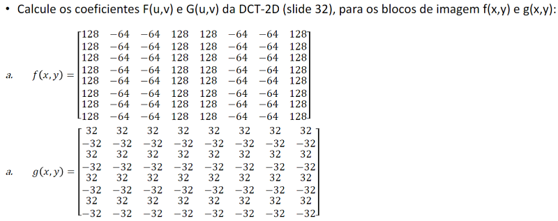

Exercício 3. Coeficientes da DCT-2D
A resposta foi dada no Jupyter Notebook convertido para html abaixo:
Utilizei esta implementação em matlab como ponto de partida para minha resposta.
Bruno Sanches Rodrigues 11201721076
Utilizei esta implementação em matlab como ponto de partida para minha resposta.
import numpy as np
# Criando o bloco f
l1 = [128 for i in range(8)]
l2 = [-64 for i in range(8)]
f = [l1,l2,l2,l1,l1,l2,l2,l1]
f = np.array(f).T
print(f.shape, f)
# Criando o bloco g
l3 = [32 for i in range(8)]
l4 = [-32 for i in range(8)]
g = [l3 if i % 2 == 0 else l4 for i in range(8)]
g = np.array(g)
print(g.shape, g)
# Definindo funções para a a dct 2d
def C(w):
if w == 0:
return 1/(2**(1/2))
return 1
def summation1(block,u,v):
h,w = block.shape
res = 0
for x in range(h):
for y in range(w):
res+= block[x,y]* np.cos(((2*x+1)*u*np.pi)/16)* np.cos(((2*y+1)*v*np.pi)/16)
return res
def F(block,u,v):
return (1/4)*C(u)*C(v)*summation1(block,u,v)
def dct(block):
block = np.float32(block)
dctBlock = np.zeros(block.shape)
for u in range(8):
for v in range(8):
dctBlock[u,v] = F(block,u,v)
return np.float32(dctBlock)
# Definindo funções para a a dct 2d inversa (deve haver algum erro)
def summation2(dctBlock,x,y):
res = 0
for u in range(8):
for v in range(8):
res+= C(u)*C(v)*F(dctBlock,u,v)* np.cos(((2*x+1)*u*np.pi)/16)* np.cos(((2*y+1)*v*np.pi)/16)
return res
def dct_inv(dctBlock):
dctBlock = np.float32(dctBlock)
dctInvBlock = np.zeros(dctBlock.shape)
for x in range(8):
for y in range(8):
dctInvBlock[x,y] = (1/4)*summation2(dctBlock,x,y)
return np.float32(dctInvBlock)
# Aplicando a dct e a dct inversa
f_dct = dct(f)
f_dct_inv = dct_inv(f_dct)
# Resultados
np.set_printoptions(precision=0, suppress=True)
print("f:"); print(f)
print("f_dct"); print(f_dct)
print("f_dct_inv"); print(f_dct_inv)
# Aplicando a dct e a dct inversa
g_dct = dct(g)
g_dct_inv = dct_inv(g_dct)
# Resultados
np.set_printoptions(precision=0, suppress=True)
print("g:"); print(g)
print("g_dct"); print(g_dct)
print("g_dct_inv"); print(g_dct_inv)
# Exemplo da aula foi feito como teste de sanidade
h =[[63, 33, 36, 28, 63, 81, 86, 98],
[ 27, 18, 17, 11, 22, 48, 104, 108],
[ 72, 52, 28, 15, 17, 16, 47, 77],
[132, 100, 56, 19, 10, 9, 21, 55],
[187, 186, 166, 88, 13, 34, 43, 51],
[184, 203, 199, 177, 82, 44, 97, 73],
[211, 214, 208, 198, 134, 52, 78, 83],
[211, 210, 203, 191, 133, 79, 74, 86]]
h = np.float32(h)
# Aplicando a dct e a dct inversa
h_dct = dct(h)
h_dct_inv = dct_inv(h_dct)
# Resultados
np.set_printoptions(precision=0, suppress=True)
print("h:"); print(h)
print("h_dct"); print(h_dct)
print("h_dct_inv"); print(h_dct_inv)